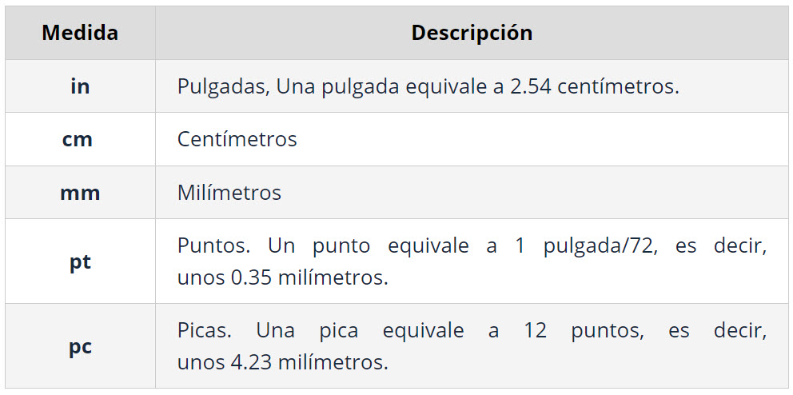
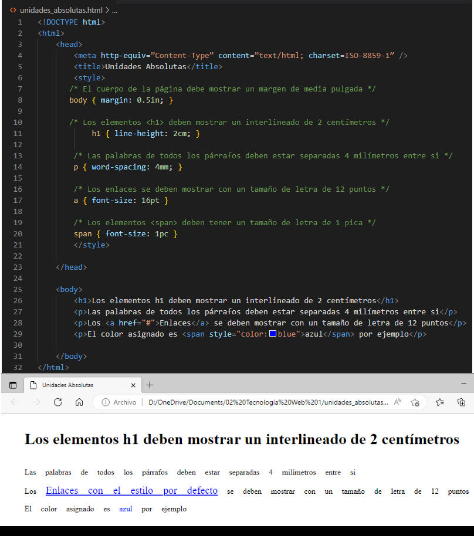

Unidades de medida y colores
Las medidas en CSS definen la altura, anchura, márgenes de los elementos y para establecer el tamaño de letra del texto. Todas las medidas se indican como un valor numérico entero o decimal seguido de una unidad de medida (sin ningún espacio en blanco entre el número y la unidad de medida).
Unidades absolutas
El valor no depende de otro valor de referencia.
Las unidades absolutas definidas por CSS son:

Algunos ejemplos donde se utilizan unidades absolutas:

Ventajas: su valor es directamente el valor que se debe utilizar, sin necesidad de realizar cálculos intermedios.
Desventajas: son muy poco flexibles y no se adaptan fácilmente a los diferentes medios.
El punto (pt) es la unidad de medida más utilizada para establecer el tamaño del texto en los documentos que se van a imprimir (print en CSS).
Unidades relativas
Las unidades relativas no están completamente definidas, ya que su valor depende de otro. A pesar de su aparente dificultad, son las más utilizadas en el diseño web por la flexibilidad con la que se adaptan a los diferentes medios.
A continuación, se muestran las tres unidades de medida relativas definidas por CSS y la referencia que toma cada una para determinar su valor real:
- em, (no confundir con la etiqueta <em> de HTML) relativa respecto del tamaño de letra del elemento.
- ex, relativa respecto de la altura de la letra x ("equis minúscula") del tipo y tamaño de letra del elemento.
- px, (píxel) relativa respecto de la resolución de la pantalla del dispositivo en el que se visualiza la página HTML.
Las unidades em y ex no han sido creadas por CSS, sino que llevan décadas utilizándose en el campo de la tipografía. Aunque no es una definición exacta, la unidad 1em equivale a la anchura de la letra M ("eme mayúscula") del tipo y tamaño de letra del elemento.
La unidad em hace referencia al tamaño en puntos de la letra que se está utilizando. Si se utiliza una tipografía de 12 puntos, 1em equivale a 12 puntos. El valor de 1ex se puede aproximar por 0.5 em. Por ejemplo:
p { margin: 1em; }
La regla CSS anterior indica que los párrafos deben mostrar un margen de anchura igual a 1em. Como se trata de una unidad de medida relativa, es necesario realizar un cálculo matemático para determinar la anchura real de ese margen.
La unidad de medida em siempre hace referencia al tamaño de letra del elemento. Por otra parte, todos los navegadores muestran por defecto el texto de los párrafos con un tamaño de letra de 16 píxel. Por tanto, en este caso el margen de 1em equivale a un margen de anchura 16px.
Para cambiar el tamaño de letra de los párrafos, por ejemplo:
p { font-size: 32px; margin: 1em; }
El valor del margen sigue siendo el mismo en unidades relativas (1em) pero su valor real ha variado porque el tamaño de letra de los párrafos ha variado. En este caso, el margen tendrá una anchura de 32px, ya que 1em siempre equivale al tamaño de letra del elemento.
Si se quiere reducir la anchura del margen a 16px pero manteniendo el tamaño de letra de los párrafos en 32px, se debe utilizar la siguiente regla CSS:
p { font-size: 32px; margin: 0.5em; }
El valor 0.5em se interpreta como "la mitad del tamaño de letra del elemento", ya que se debe multiplicar por 0.5 su tamaño de letra (32px x 0.5 = 16px). De la misma forma, si se quiere mostrar un margen de 8px de anchura, se debería utilizar el valor 0.25em, ya que 32px x 0.25 = 8px.
La gran ventaja de las unidades relativas es que siempre mantienen las proporciones del diseño de la página. Establecer el margen de un elemento con el valor 1em equivale a indicar que "el margen del elemento debe ser del mismo tamaño que su letra y debe cambiar proporcionalmente".
En efecto, si el tamaño de letra de un elemento aumenta hasta un valor enorme, su margen de 1em también será enorme. Si su tamaño de letra se reduce hasta un valor diminuto, el margen de 1em también será diminuto. El uso de unidades relativas permite mantener las proporciones del diseño cuando se modifica el tamaño de letra de la página.
El funcionamiento de la unidad ex es idéntico a em, salvo que en este caso, la referencia es la altura de la letra x minúscula, por lo que su valor es aproximadamente la mitad que el de la unidad em.
Por último, las medidas indicadas en píxel también se consideran relativas, ya que el aspecto de los elementos dependerá de la resolución del dispositivo en el que se visualiza la página HTML. Si un elemento tiene una anchura de 400px, ocupará la mitad de una pantalla con una resolución de 800x600, pero ocupará menos de la tercera parte en una pantalla con resolución de 1440x900.
Las unidades de medida se pueden mezclar en los diferentes elementos de una misma página, como en el siguiente ejemplo:
body { font-size: 10px; }
h1 { font-size: 2.5em; }
En primer lugar, se establece un tamaño de letra base de 10 píxel para toda la página. A continuación, se asigna un tamaño de 2.5em al elemento <h1>, por lo que su tamaño de letra real será de 2.5 x 10px = 25px.
Como se vio en los capítulos anteriores, el valor de la mayoría de propiedades CSS se hereda de padres a hijos. Así por ejemplo, si se establece el tamaño de letra al elemento <body>, todos los elementos de la página tendrán el mismo tamaño de letra, salvo que indiquen otro valor.
Sin embargo, el valor de las medidas relativas no se hereda directamente, sino que se hereda su valor real una vez calculado. El siguiente ejemplo muestra este comportamiento:
body {
font-size: 12px;
text-indent: 3em;
}
h1 { font-size: 15px }
La propiedad text-indent, como se verá en los próximos capítulos, se utiliza para tabular la primera línea de un texto. El elemento <body> define un valor para esta propiedad, pero el elemento <h1> no lo hace, por lo que heredará el valor de su elemento padre. Sin embargo, el valor heredado no es 3em, sino 36px.
Si se heredara el valor 3em, al multiplicarlo por el valor de font-size del elemento <h1> (que vale 15px) el resultado sería 3em x 15px = 45px. No obstante, como se ha comentado, los valores que se heredan no son los relativos, sino los valores ya calculados.
Por lo tanto, en primer lugar se calcula el valor real de 3em para el elemento <body>: 3em x 12px = 36px. Una vez calculado el valor real, este es el valor que se hereda para el resto de elementos.
Porcentaje
El porcentaje también es una unidad de medida relativa, aunque por su importancia CSS la trata de forma separada a em, ex y px. Un porcentaje está formado por un valor numérico seguido del símbolo % y siempre está referenciado a otra medida. Cada una de las propiedades de CSS que permiten indicar como valor un porcentaje, define el valor al que hace referencia ese porcentaje.
Los porcentajes se pueden utilizar por ejemplo para establecer el valor del tamaño de letra de los elementos:
body { font-size: 1em; }
h1 { font-size: 200%; }
h2 { font-size: 150%; }
Los tamaños establecidos para los elementos <h1> y <h2> mediante las reglas anteriores, son equivalentes a 2em y 1.5em respectivamente, por lo que es más habitual definirlos mediante em.
Los porcentajes también se utilizan para establecer la anchura de los elementos:
div#contenido { width: 600px; }
div.principal { width: 80%; }
<div id="contenido">
<div class="principal">
...
</div>
</div>
En el ejemplo anterior, la referencia del valor 80% es la anchura de su elemento padre. Por tanto, el elemento <div> cuyo atributo class vale principal tiene una anchura de 80% x 600px = 480px.
Recomendaciones
- En general, se recomienda el uso de unidades relativas siempre que sea posible, ya que mejora la accesibilidad de la página y permite que los documentos se adapten fácilmente a cualquier medio y dispositivo.
- El documento Recomendaciones sobre técnicas CSS para la mejora de la accesibilidad de los contenidos HTML, elaborado por el organismo W3C, recomienda el uso de la unidad em para indicar el tamaño del texto y para todas las medidas que sean posibles.
- Normalmente se utilizan píxel y porcentajes para definir el layout del documento (básicamente, la anchura de las columnas y de los elementos de las páginas) y em y porcentajes para el tamaño de letra de los textos.